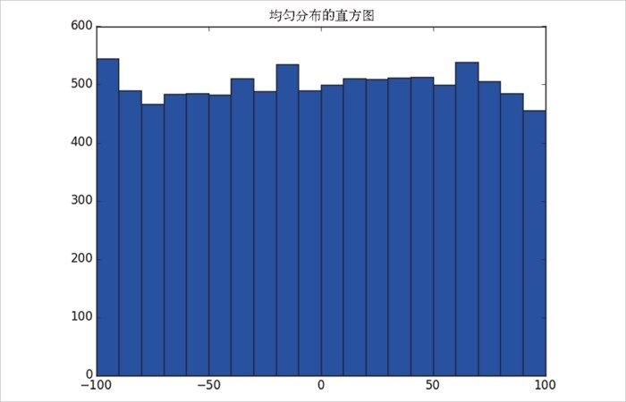
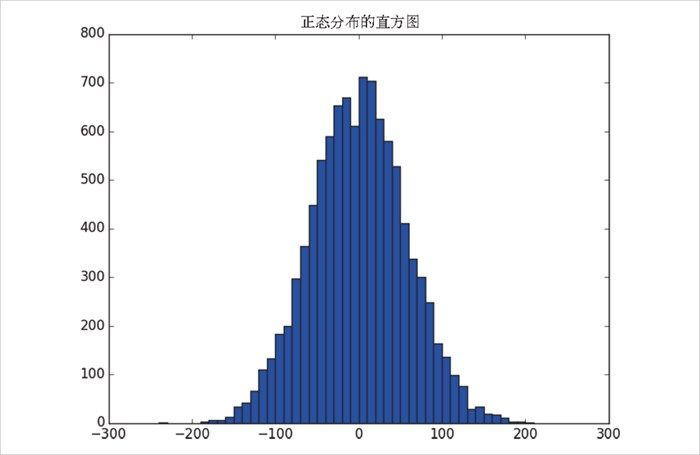
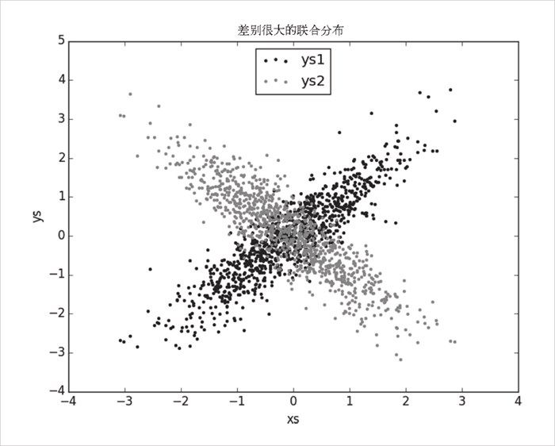
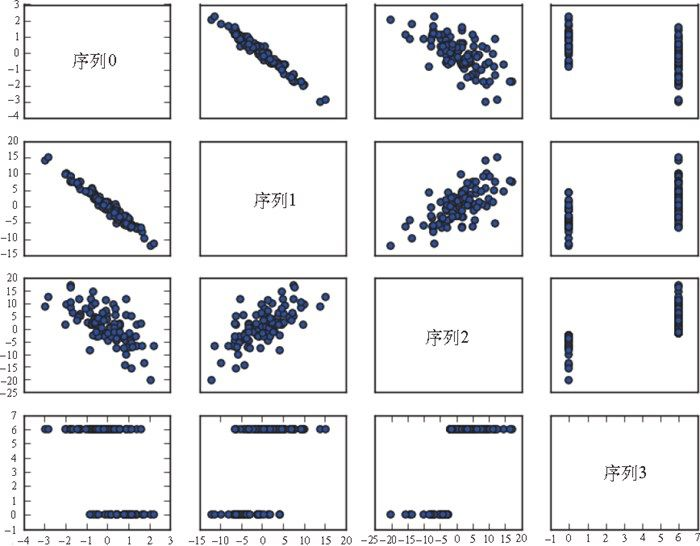

10.1 探索你的数据
当确定了需要研究的问题，并已获取了一些数据时，你摩拳擦掌地恨不得马上建模求解。但是，你需要克制一下。首先，你应该探索 数据。
10.1.1 探索一维数据
最简单的情形是，你得到的一个数据集合仅仅是一维数据集。比如，它们可以是每个用户在你的网站上平均每天花费的时间，每个数据科学教程视频的观看次数，或者是你的数据科学图书馆中每本数据科学书的页数。
第一步显然是计算一些总结性统计数据。比如你可能想知道你的数据集中有多少个数据点，最小值是多少，最大值是多少，平均值是多少，或者标准差是多少。
如果你仍不能很好地理解以上步骤，那么下一步最好是绘出直方图，即将你的数据分组成离散的区间 （bucket），并对落入每个区间的数据点进行计数：
def bucketize(point, bucket_size):
"""floor the point to the next lower multiple of bucket_size"""
return bucket_size * math.floor(point / bucket_size)
def make_histogram(points, bucket_size):
"""buckets the points and counts how many in each bucket"""
return Counter(bucketize(point, bucket_size) for point in points)
def plot_histogram(points, bucket_size, title=""):
histogram = make_histogram(points, bucket_size)
plt.bar(histogram.keys(), histogram.values(), width=bucket_size)
plt.title(title)
plt.show()
比如，考虑以下两个数据集：
random.seed(0)
# -100到100之间均匀抽取
uniform = [200 * random.random() - 100 for _ in range(10000)]
# 均值为0标准差为57的正态分布
normal = [57 * inverse_normal_cdf(random.random())
for _ in range(10000)]
这两个数据集的均值都接近 0，标准差都接近 58 ，但它们的分布非常不同。图 10-1 展示了均匀分布。

图 10-1：均匀分布的直方图
plot_histogram(uniform, 10, "均匀分布的直方图")
而图 10-2 展示了正态分布：
plot_histogram(normal, 10, "正态分布的直方图")
这两种分布有非常不同的最大值和最小值。但是，仅仅知道这一点并不足以理解它们有何差异。

图 10-2：正态分布的直方图
10.1.2 二维数据
现在假设你的数据集是二维的。也许在每天上网时间之外还增加了数据科学工作年限。你当然会希望能从每个维度上单独理解数据，但也许你更希望综合两个维度来考察数据。
比如，考察下面一个伪数据集：
def random_normal():
"""returns a random draw from a standard normal distribution"""
return inverse_normal_cdf(random.random())
xs = [random_normal() for _ in range(1000)]
ys1 = [ x + random_normal() / 2 for x in xs]
ys2 = [-x + random_normal() / 2 for x in xs]
如果你对 ys1 和 ys2 运行 plot_histogram 程序，会得到很相似的直方图（事实上，两个正态分布的均值和标准差都相同）。
但是在联合分布上，每个都与 xs 有很大差别，如图 10-3 所示：
plt.scatter(xs, ys1, marker='.', color='black', label='ys1')
plt.scatter(xs, ys2, marker='.', color='gray', label='ys2')
plt.xlabel('xs')
plt.ylabel('ys')
plt.legend(loc=9)
plt.title("差别很大的联合分布")
plt.show()

图 10-3：两个不同的 ys 的散点图
如果你考察相关性，差异会非常明显：
print correlation(xs, ys1) # 0.9
print correlation(xs, ys2) # -0.9
10.1.3 多维数据
对于多维数据，你可能想了解各个维度之间是如何相关的。一个简单的方法是考察相关矩阵（correlation matrix），矩阵中第 i 行第 j 列的元素表示第 i 维与第 j 维数据的相关性：
def correlation_matrix(data):
"""returns the num_columns x num_columns matrix whose (i, j)th entry
is the correlation between columns i and j of data"""
_, num_columns = shape(data)
def matrix_entry(i, j):
return correlation(get_column(data, i), get_column(data, j))
return make_matrix(num_columns, num_columns, matrix_entry)
一个更为直观的方法（如果维度不太多）是做散点图矩阵 （图 10-4），以展示配对散点图。通过命令 plt.subplots() 可以生成子图。我们给出了行数和列数，它返回一个 figure 对象（我们不会用到它）和一个 axes 对象的二维数组（每个都会绘出）：
import matplotlib.pyplot as plt
_, num_columns = shape(data)
fig, ax = plt.subplots(num_columns, num_columns)
for i in range(num_columns):
for j in range(num_columns):
# x轴上column_j对y轴上column_i的散点
if i != j: ax[i][j].scatter(get_column(data, j), get_column(data, i))
# 只有当 i == j时显示序列名
else: ax[i][j].annotate("series " + str(i), (0.5, 0.5),
xycoords='axes fraction',
ha="center", va="center")
# 除了图的左侧和下方之外，隐藏图的标记
if i < num_columns - 1: ax[i][j].xaxis.set_visible(False)
if j > 0: ax[i][j].yaxis.set_visible(False)
# 修复右下方和左上方的图标记
# 因为它们只有文本，是错误的
ax[-1][-1].set_xlim(ax[0][-1].get_xlim())
ax[0][0].set_ylim(ax[0][1].get_ylim())
plt.show()

图 10-4：散点图矩阵
通过这些散点图你会看出，序列 1 与序列 0 的负相关程度很高，序列 2 和序列 1 的正相关程度很高，序列 3 的值仅有 0 和 6，并且 0 对应序列 2 中较小的值，6 对应较大的值。
这是一种能让你查看变量之间大概的相关度的快捷方法（除非你为了查看更加具体的效果而花费数小时调整 matplotlib ，这样就不快捷了）。